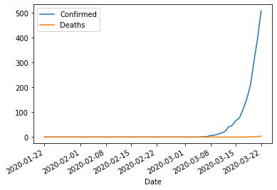

Table of Contents
1 Intermediate Pandas
Today we look at some ways to use Pandas DataFrames like databases.
1.1 Revisiting a previous example with batches of data
We start with the example we looked at before. It is a dataset from a set of experiments. The experiments are grouped by the Day they were run on. We will use Pandas to do some analysis by the day.
fname = '04-p-t.dat' url = 'https://www.itl.nist.gov/div898/handbook/datasets/MODEL-4_4_4.DAT' import urllib.request urllib.request.urlretrieve(url, fname) import pandas as pd df = pd.read_csv('03-p-t.dat', delimiter='\s+', skiprows=2, names=['Run order', 'Day', 'Ambient Temperature', 'Temperature', 'Pressure', 'Fitted Value', 'Residual']) df
Run order Day Ambient Temperature Temperature Pressure Fitted Value \
0 1 1 23.820 54.749 225.066 222.920
1 2 1 24.120 23.323 100.331 99.411
2 3 1 23.434 58.775 230.863 238.744
3 4 1 23.993 25.854 106.160 109.359
4 5 1 23.375 68.297 277.502 276.165
5 6 1 23.233 37.481 148.314 155.056
6 7 1 24.162 49.542 197.562 202.456
7 8 1 23.667 34.101 138.537 141.770
8 9 1 24.056 33.901 137.969 140.983
9 10 1 22.786 29.242 117.410 122.674
10 11 2 23.785 39.506 164.442 163.013
11 12 2 22.987 43.004 181.044 176.759
12 13 2 23.799 53.226 222.179 216.933
13 14 2 23.661 54.467 227.010 221.813
14 15 2 23.852 57.549 232.496 233.925
15 16 2 23.379 61.204 253.557 248.288
16 17 2 24.146 31.489 139.894 131.506
17 18 2 24.187 68.476 273.931 276.871
18 19 2 24.159 51.144 207.969 208.753
19 20 2 23.803 68.774 280.205 278.040
20 21 3 24.381 55.350 227.060 225.282
21 22 3 24.027 44.692 180.605 183.396
22 23 3 24.342 50.995 206.229 208.167
23 24 3 23.670 21.602 91.464 92.649
24 25 3 24.246 54.673 223.869 222.622
25 26 3 25.082 41.449 172.910 170.651
26 27 3 24.575 35.451 152.073 147.075
27 28 3 23.803 42.989 169.427 176.703
28 29 3 24.660 48.599 192.561 198.748
29 30 3 24.097 21.448 94.448 92.042
30 31 4 22.816 56.982 222.794 231.697
31 32 4 24.167 47.901 199.003 196.008
32 33 4 22.712 40.285 168.668 166.077
33 34 4 23.611 25.609 109.387 108.397
34 35 4 23.354 22.971 98.445 98.029
35 36 4 23.669 25.838 110.987 109.295
36 37 4 23.965 49.127 202.662 200.826
37 38 4 22.917 54.936 224.773 223.653
38 39 4 23.546 50.917 216.058 207.859
39 40 4 24.450 41.976 171.469 172.720
Residual
0 2.146
1 0.920
2 -7.881
3 -3.199
4 1.336
5 -6.741
6 -4.895
7 -3.232
8 -3.014
9 -5.263
10 1.429
11 4.285
12 5.246
13 5.198
14 -1.429
15 5.269
16 8.388
17 -2.940
18 -0.784
19 2.165
20 1.779
21 -2.791
22 -1.938
23 -1.186
24 1.247
25 2.259
26 4.998
27 -7.276
28 -6.188
29 2.406
30 -8.902
31 2.996
32 2.592
33 0.990
34 0.416
35 1.692
36 1.835
37 1.120
38 8.199
39 -1.251
The first aggregation we will look at is how to make groups of data that are related by values in a column. We use the groupby function (https://pandas.pydata.org/pandas-docs/stable/reference/api/pandas.DataFrame.groupby.html#pandas.DataFrame.groupby), and specify a column to group on. The result is a DataFrameGroupBy object, which we next have to work with.
groups = df.groupby('Day') type(groups)
pandas.core.groupby.generic.DataFrameGroupBy
The groups can describe themselves. Here we see we get 4 groups, one for each day, and you can see some statistics about each group. We do not need those for now.
groups.describe()
Run order \
count mean std min 25% 50% 75% max
Day
1 10.0 5.5 3.02765 1.0 3.25 5.5 7.75 10.0
2 10.0 15.5 3.02765 11.0 13.25 15.5 17.75 20.0
3 10.0 25.5 3.02765 21.0 23.25 25.5 27.75 30.0
4 10.0 35.5 3.02765 31.0 33.25 35.5 37.75 40.0
Ambient Temperature ... Fitted Value Residual \
count mean ... 75% max count mean
Day ...
1 10.0 23.6646 ... 217.80400 276.165 10.0 -2.9823
2 10.0 23.7758 ... 244.69725 278.040 10.0 2.6827
3 10.0 24.2883 ... 205.81225 225.282 10.0 -0.6690
4 10.0 23.5207 ... 206.10075 231.697 10.0 0.9687
std min 25% 50% 75% max
Day
1 3.452383 -7.881 -5.17100 -3.2155 -0.06350 2.146
2 3.606824 -2.940 -0.23075 3.2250 5.23400 8.388
3 3.948274 -7.276 -2.57775 0.0305 2.13900 4.998
4 4.255487 -8.902 0.55950 1.4060 2.40275 8.199
[4 rows x 48 columns]
We can get a dictionary of the group names and labels from the groups attribute.
groups.groups
{1: Int64Index([0, 1, 2, 3, 4, 5, 6, 7, 8, 9], dtype='int64'),
2: Int64Index([10, 11, 12, 13, 14, 15, 16, 17, 18, 19], dtype='int64'),
3: Int64Index([20, 21, 22, 23, 24, 25, 26, 27, 28, 29], dtype='int64'),
4: Int64Index([30, 31, 32, 33, 34, 35, 36, 37, 38, 39], dtype='int64')}
We can get the subset of rows from those group labels.
df.loc[groups.groups[2]]
Run order Day Ambient Temperature Temperature Pressure Fitted Value \
10 11 2 23.785 39.506 164.442 163.013
11 12 2 22.987 43.004 181.044 176.759
12 13 2 23.799 53.226 222.179 216.933
13 14 2 23.661 54.467 227.010 221.813
14 15 2 23.852 57.549 232.496 233.925
15 16 2 23.379 61.204 253.557 248.288
16 17 2 24.146 31.489 139.894 131.506
17 18 2 24.187 68.476 273.931 276.871
18 19 2 24.159 51.144 207.969 208.753
19 20 2 23.803 68.774 280.205 278.040
Residual
10 1.429
11 4.285
12 5.246
13 5.198
14 -1.429
15 5.269
16 8.388
17 -2.940
18 -0.784
19 2.165
We don't usually work with groups that way though, it is more common to do some analysis on each group.
Suppose we want to plot the Pressure vs Temperature for each group, so we can see visually if there are any trends that could be attributed to the group. To do this, we need to iterate over the groups and then make a plot on each one.
A DataFrameGroupBy is iterable and when you loop over it, you get the key it was grouped on, and a DataFrame that contains the items in the group. Here we loop over each group, and plot each group with a different color.
%matplotlib inline import matplotlib.pyplot as plt fig, ax = plt.subplots() for (day, group) in groups: group.plot('Temperature', 'Pressure', ax=ax, label=f'{day}', style='o') plt.ylabel('Pressure')
Text(0, 0.5, 'Pressure')
<Figure size 432x288 with 1 Axes>

the point of this is we cannot see a visual clustering of the groups by day. That is important, because if we did it could suggest something was different that day.
1.2 Combining data sets
Siddhant Lambor provided from two experiments conducted to measure the properties of a worm-like micelles solution. He had carried out experiments on a rheometer to measure the viscosity of a worm-like micelles solution in a Couette cell geometry and a Cone and Plate geometry. Ideally, there should not be a difference as viscosity is intrinsic to the fluid. Analysis of this data will confirm if that is true. First, we read this data in from the two data files.
url = 'https://drive.google.com/uc?id=1PaBg_dpK2_Ot8yvJr5Lwsa8e_3H9OErH' import urllib.request urllib.request.urlretrieve(url, 'couette.xls')
('couette.xls', <http.client.HTTPMessage at 0x128f1cd90>)
couette = pd.read_excel('couette.xls', sheet_name='Flow sweep - 1', header=1) # sheet name is case sensitive, excel file name is not couette
We can drop the row at index 0, it just has the units in it. With this syntax, we have to save the resulting DataFrame back into the variable, or it will not be changed.
couette = couette.drop(0)
couette
Now get the second file.
url = 'https://drive.google.com/uc?id=1XtGJ-PStHNO5mqlSuFFkPEf2cQYlLie_' import urllib.request urllib.request.urlretrieve(url, 'cp.xls')
('cp.xls', <http.client.HTTPMessage at 0x128f34950>)
Here, we combine the drop function all into one line.
conePlate = pd.read_excel('cp.xls', sheet_name='Flow sweep - 1', header=1).drop(0) conePlate.head(5)
For this analysis, we are only interested in the shear rate, stress and viscosity values. Let us drop the other columns. We do that by the names, and specify inplace=True, which modifies the DataFrame itself.
conePlate.drop(['Temperature', 'Step time', 'Normal stress'], axis=1, inplace=True) # if we do not use inplace=True, the data frame will not be changed. It would by default create a new data frame # and we would have to assign a different variable to capture this change. conePlate.head(5)
We also do that for the couette data. Here we did not use inplace=True, so we have to save the result back into the variable to get the change.
couette = couette.drop(['Temperature', 'Step time', 'Normal stress'], axis=1) # without using inplace = True couette.head(5)
We can see info about each DataFrame like this.
couette.info()
conePlate.info()
We could proceed to analyze the DataFrames separately, but instead, we will combine them into one DataFrame. Before doing that, we need to add a column to each one so we know which data set is which. Simply assigning a value to a new column name will do that.
couette['type'] = 'couette' couette
conePlate['type'] = 'cone'
Now, we can combine these into a single DataFrame. This is not critical, and you can get by without it, but I want to explore the idea, and illustrate it is possible.
df = pd.concat([conePlate, couette])
df
Finally, we are ready for the visualization. We will group the DataFrame and then make plots for each group. Here we illustrate several new arguments, including loglog plots, secondary axes, colored tick labels, and multiple legends.
g = df.groupby('type') ax1 = g.get_group('cone').plot('Shear rate', 'Viscosity', logx=True, logy=True, style='b.-', label="CP viscosity") g.get_group('couette').plot('Shear rate', 'Viscosity', logx=True, logy=True, style='g.-', ax=ax1, label="Couette viscosity") ax2 = g.get_group('cone').plot('Shear rate', 'Stress', secondary_y=True, logx=True, logy=True, style='r.-', ax=ax1, label="CP stress") g.get_group('couette').plot('Shear rate', 'Stress', secondary_y=True, logx=True, logy = True, style='y.', ax=ax2, label="Couette Stress") # Setting y axis labels ax1.set_ylabel("Viscosity (Pa.s)", color='b') [ticklabel.set_color('b') for ticklabel in ax1.get_yticklabels()] ax2.set_ylabel("Stress (Pa)", color='r') [ticklabel.set_color('r') for ticklabel in ax1.get_yticklabels()] # setting legend locations ax1.legend(loc=6) ax2.legend(loc=7) ax1.set_xlabel("Shear rate (1/s)") plt.title("Comparison of Cone and Plate with Couette Cell")
So, in fact we can see these two experiments are practically equivalent.
1.3 Monitoring Covid cases as a function of time
This site provides COVID data for all the countries in the world as a function of time.
We are going to use this data set to illustrate several concepts in data analysis.
https://www.tableau.com/about/blog/2020/3/ten-considerations-you-create-another-chart-about-covid-19
read_csv is flexible enough to directly read the data from a URL that exports the google sheet as CSV data. The only new wrinkle here is we tell it some column names that should be parsed as dates.
import pandas as pd url = 'https://docs.google.com/spreadsheets/d/14quQPFErG-hlpsrNgYcX85vW7JMMK5X2vNZrafRcH8c/export?format=csv&id=14quQPFErG-hlpsrNgYcX85vW7JMMK5X2vNZrafRcH8c' df = pd.read_csv(url, parse_dates=['Date', 'Prep_Flow_Runtime']) df
Case_Type Cases Difference Date Country_Region Province_State \
0 Deaths 0.0 0.0 2020-02-27 Bahamas NaN
1 Confirmed 16.0 0.0 2020-02-16 Germany NaN
2 Deaths 0.0 0.0 2020-01-31 Canada Alberta
3 Deaths 0.0 0.0 2020-03-04 Australia Queensland
4 Confirmed 0.0 0.0 2020-01-25 Suriname NaN
... ... ... ... ... ... ...
85013 Deaths 1.0 NaN 2020-03-23 US Maryland
85014 Deaths 0.0 NaN 2020-03-23 US Oregon
85015 Confirmed 6.0 NaN 2020-03-23 US Massachusetts
85016 Confirmed 0.0 NaN 2020-03-23 US Kansas
85017 Deaths 0.0 NaN 2020-03-23 US Nebraska
Admin2 Combined_Key FIPS Lat \
0 NaN NaN NaN 25.034300
1 NaN NaN NaN 51.000000
2 NaN NaN NaN 53.933300
3 NaN NaN NaN -28.016700
4 NaN NaN NaN 3.919300
... ... ... ... ...
85013 Montgomery Montgomery, Maryland, US 24031.0 39.136763
85014 Jefferson Jefferson, Oregon, US 41031.0 44.628068
85015 Hampshire Hampshire, Massachusetts, US 25015.0 42.339980
85016 Marshall Marshall, Kansas, US 20117.0 39.783597
85017 Garden Garden, Nebraska, US 31069.0 41.617031
Long Prep_Flow_Runtime Table_Names
0 -77.396300 2020-03-29 Time Series
1 9.000000 2020-03-29 Time Series
2 -116.576500 2020-03-29 Time Series
3 153.400000 2020-03-29 Time Series
4 -56.027800 2020-03-29 Time Series
... ... ... ...
85013 -77.203582 2020-03-29 Daily Summary
85014 -121.178320 2020-03-29 Daily Summary
85015 -72.658985 2020-03-29 Daily Summary
85016 -96.522790 2020-03-29 Daily Summary
85017 -102.331397 2020-03-29 Daily Summary
[85018 rows x 13 columns]
Let's get the data out of this for Pennsylvania. The first step is not hard, we just select the rows for Pennsylvania.
df[df['Province_State'] == 'Pennsylvania']
Case_Type Cases Difference Date Country_Region Province_State \
33278 Deaths 0.0 0.0 2020-01-28 US Pennsylvania
33426 Confirmed 7.0 1.0 2020-03-09 US Pennsylvania
33552 Deaths 0.0 0.0 2020-02-07 US Pennsylvania
33621 Confirmed 0.0 0.0 2020-02-25 US Pennsylvania
33624 Confirmed 0.0 0.0 2020-02-07 US Pennsylvania
... ... ... ... ... ... ...
84583 Deaths 0.0 NaN 2020-03-23 US Pennsylvania
84775 Confirmed 3.0 NaN 2020-03-23 US Pennsylvania
84910 Deaths 0.0 NaN 2020-03-23 US Pennsylvania
84949 Confirmed 23.0 NaN 2020-03-23 US Pennsylvania
85000 Confirmed 1.0 NaN 2020-03-23 US Pennsylvania
Admin2 Combined_Key FIPS Lat \
33278 NaN NaN NaN 39.907800
33426 NaN NaN NaN 39.907800
33552 NaN NaN NaN 39.907800
33621 NaN NaN NaN 39.907800
33624 NaN NaN NaN 39.907800
... ... ... ... ...
84583 Clarion Clarion, Pennsylvania, US 42031.0 41.192658
84775 Centre Centre, Pennsylvania, US 42027.0 40.920589
84910 Blair Blair, Pennsylvania, US 42013.0 40.479614
84949 Northampton Northampton, Pennsylvania, US 42095.0 40.751827
85000 Fayette Fayette, Pennsylvania, US 42051.0 39.920410
Long Prep_Flow_Runtime Table_Names
33278 -77.209800 2020-03-29 Time Series
33426 -77.209800 2020-03-29 Time Series
33552 -77.209800 2020-03-29 Time Series
33621 -77.209800 2020-03-29 Time Series
33624 -77.209800 2020-03-29 Time Series
... ... ... ...
84583 -79.424135 2020-03-29 Daily Summary
84775 -77.822006 2020-03-29 Daily Summary
84910 -78.349174 2020-03-29 Daily Summary
84949 -75.304718 2020-03-29 Daily Summary
85000 -79.642912 2020-03-29 Daily Summary
[1062 rows x 13 columns]
You can see here there are a few challenges in this data:
- There are two types of data: Confirmed cases, and Deaths
- There are two types of rows: "Time Series" and "Daily Summary"
- For the "Daily Summary" there are multiple entries on the same day for different regions in PA.
Let's pull the data apart in a few ways. The Time Series data looks like it is already aggregated. How can we tell? Let's look at the series of dates in this subset. You can see that there are 61 unique values of the date, and 61 values in the data frame. That can only be true if there is a single instance of each date.
d1 = df[(df['Province_State'] == 'Pennsylvania') & (df['Table_Names'] == 'Time Series') & (df['Case_Type'] == 'Confirmed')]['Date'] len(d1), len(d1.unique())
:results:
(61, 61)
Let's now group these by the Case_Type. This will split the selected rows into two groups, one for Confirmed and one for Deaths. Then we can plot these by getting each group, which returns a DataFrame. Here we string together several commands so we get the group and plot in a single line.
d1 = df[(df['Province_State'] == 'Pennsylvania') & (df['Table_Names'] == 'Time Series')] g1 = d1.groupby('Case_Type') ax = g1.get_group('Confirmed').plot(x='Date', y='Cases', label='Confirmed') g1.get_group('Deaths').plot(x='Date', y='Cases', ax=ax, label='Deaths')
:results:
<Figure size 432x288 with 1 Axes>

To see how this compares to the Daily Summary we need to take several steps. Let's narrow down these into independent cells so we can easily follow what is happening. Later we will combine this into a more compact syntax.
g1 = df.groupby('Province_State') PA = g1.get_group('Pennsylvania') PA
:results:
Next, we get the group for the Daily Summary.
ds = PA.groupby('Table_Names').get_group('Daily Summary') ds
:results:
Case_Type Cases Difference Date Country_Region Province_State \
36623 Deaths NaN 3.0 2020-03-23 US Pennsylvania
38135 Confirmed NaN 189.0 2020-03-23 US Pennsylvania
41376 Confirmed 1.0 1.0 2020-03-26 US Pennsylvania
41377 Confirmed 1.0 0.0 2020-03-29 US Pennsylvania
41378 Confirmed 1.0 0.0 2020-03-28 US Pennsylvania
... ... ... ... ... ... ...
84583 Deaths 0.0 NaN 2020-03-23 US Pennsylvania
84775 Confirmed 3.0 NaN 2020-03-23 US Pennsylvania
84910 Deaths 0.0 NaN 2020-03-23 US Pennsylvania
84949 Confirmed 23.0 NaN 2020-03-23 US Pennsylvania
85000 Confirmed 1.0 NaN 2020-03-23 US Pennsylvania
Admin2 Combined_Key FIPS Lat \
36623 NaN NaN NaN 39.907800
38135 NaN NaN NaN 39.907800
41376 Susquehanna Susquehanna, Pennsylvania, US 42115.0 41.821478
41377 Susquehanna Susquehanna, Pennsylvania, US 42115.0 41.821478
41378 Susquehanna Susquehanna, Pennsylvania, US 42115.0 41.821478
... ... ... ... ...
84583 Clarion Clarion, Pennsylvania, US 42031.0 41.192658
84775 Centre Centre, Pennsylvania, US 42027.0 40.920589
84910 Blair Blair, Pennsylvania, US 42013.0 40.479614
84949 Northampton Northampton, Pennsylvania, US 42095.0 40.751827
85000 Fayette Fayette, Pennsylvania, US 42051.0 39.920410
Long Prep_Flow_Runtime Table_Names
36623 -77.209800 2020-03-29 Daily Summary
38135 -77.209800 2020-03-29 Daily Summary
41376 -75.800720 2020-03-29 Daily Summary
41377 -75.800720 2020-03-29 Daily Summary
41378 -75.800720 2020-03-29 Daily Summary
... ... ... ...
84583 -79.424135 2020-03-29 Daily Summary
84775 -77.822006 2020-03-29 Daily Summary
84910 -78.349174 2020-03-29 Daily Summary
84949 -75.304718 2020-03-29 Daily Summary
85000 -79.642912 2020-03-29 Daily Summary
[940 rows x 13 columns]
Now, we need to group this by case type and date, then we sum up each group. This will make two groups containing the aggregated sum by date of each case type.
d = ds.groupby(['Case_Type', 'Date']).sum() d
Cases Difference FIPS Lat Long
Case_Type Date
Confirmed 2020-03-23 698.0 189.0 2818489.0 2774.71905 -5277.436095
2020-03-24 946.0 248.0 2818489.0 2734.81125 -5200.226295
2020-03-25 1260.0 314.0 2818489.0 2734.81125 -5200.226295
2020-03-26 1795.0 535.0 2818489.0 2734.81125 -5200.226295
2020-03-27 2345.0 550.0 2818489.0 2734.81125 -5200.226295
2020-03-28 2845.0 500.0 2818489.0 2734.81125 -5200.226295
2020-03-29 3432.0 587.0 2818489.0 2734.81125 -5200.226295
Deaths 2020-03-23 6.0 3.0 2818489.0 2774.71905 -5277.436095
2020-03-24 8.0 2.0 2818489.0 2734.81125 -5200.226295
2020-03-25 15.0 7.0 2818489.0 2734.81125 -5200.226295
2020-03-26 18.0 3.0 2818489.0 2734.81125 -5200.226295
2020-03-27 22.0 4.0 2818489.0 2734.81125 -5200.226295
2020-03-28 34.0 12.0 2818489.0 2734.81125 -5200.226295
2020-03-29 41.0 7.0 2818489.0 2734.81125 -5200.226295
Finally, we can plot these results. To access the two case types, we note that Case_Type is the index in this new DataFrame, so we can use loc to get each one.
ax = d.loc['Confirmed'].plot(y='Cases') d.loc['Deaths'].plot(y='Cases', ax=ax)
<Figure size 432x288 with 1 Axes>

So we can see over the past 5 days, the number of cases is growing fast. We can pretty easily combine these to see the longitudinal trend over time.
g2 = df.groupby(['Province_State', 'Table_Names', 'Case_Type', 'Date']) df2 = g2.sum() ax = df2.loc[('Pennsylvania', 'Daily Summary', 'Confirmed')].plot(y='Cases', label='Confirmed DS') df2.loc[('Pennsylvania', 'Daily Summary', 'Deaths')].plot(y='Cases', ax=ax, label='Deaths DS') df2.loc[('Pennsylvania', 'Time Series', 'Confirmed')].plot(y='Cases', ax=ax, label='Confirmed') df2.loc[('Pennsylvania', 'Time Series', 'Deaths')].plot(y='Cases', ax=ax, label='Deaths')
:results:
<Figure size 432x288 with 1 Axes>

:results:
You can see the cases are growing fast.
Exercise
- Perform this analysis for another State
- Perform this analysis for a country